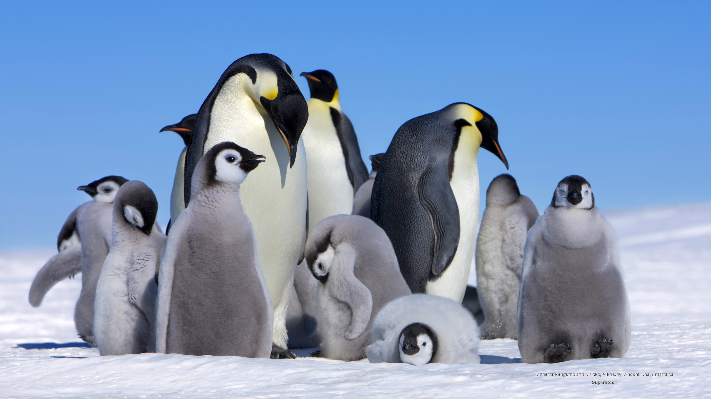

Penguins are usually found on the southern hemisphere and have an
average life span of 15 to 20 years. The largest breed is the emperor
penguin while the smallest is the little penguin. Penguins have a black
and white color which gives it a "tuxedo" look. Penguins need social
interactions to survive. A pebble may be used as a form of gifting.